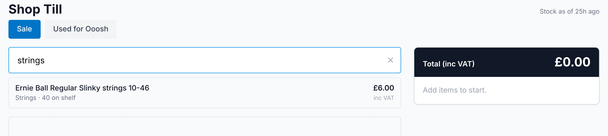
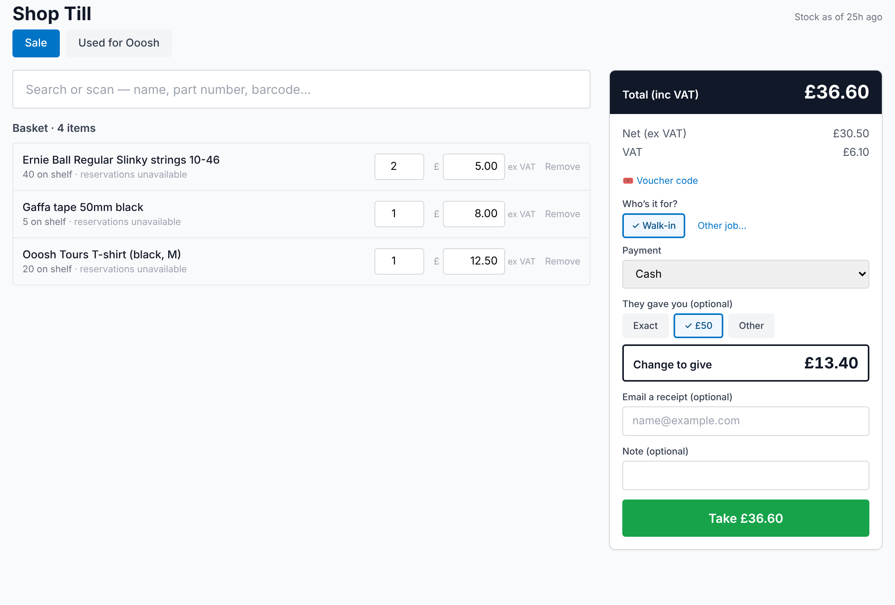
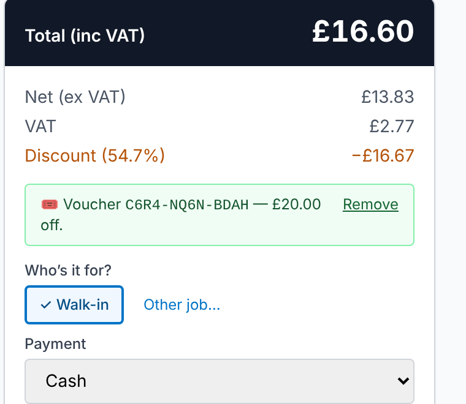
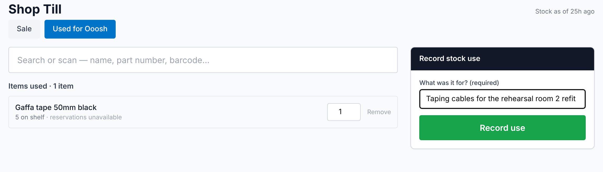
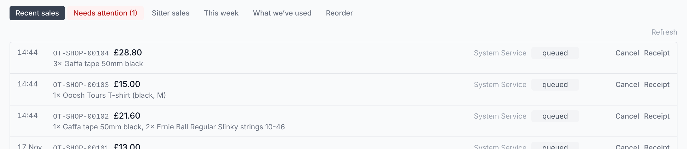

The shop till
For Ooosh staff: on a laptop, and on the front desk iPad
The shop till is in OP under Money, then Shop Till. The front desk iPad runs the same till, with a barcode scanner beside it.
Every sale is saved in OP straight away and reaches HireHop about two minutes later, on that week's shop job. HireHop keeps the stock count; you never touch the shop job in HireHop yourself.
Things to remember
- Scan, don't search, whenever the item has a barcode.
- Check the basket and the total before you take the money.
- Pick who it's for: a walk-in, a band in today, or another job.
- Got a voucher? Tap Voucher code before you take the money.
- Rang something up wrong? Cancel it in Recent sales within two minutes. After that, a manager refunds it.
- Used something ourselves? Record it under Used for Ooosh, never as a sale at £0.
What's in this guide
Part 1, the till: selling, who it's for and how they pay, discounts and vouchers, used for Ooosh, and after the sale.
Part 2, the front desk iPad: signing in, scanning, typing with the scanner connected, and when a scan doesn't work.
Part 1: The till
1
Ringing up a sale
Scan the item, or type its name, part number or barcode in the search box and pick it from the list. Prices in the list include VAT.

- Two of the same? Scan it again, or change the number in the basket.
- Prices in the basket are ex VAT, as in HireHop. The total at the top right includes VAT.
- Only some free? "Only 2 free (3 reserved for jobs)" means the rest are held for hires. Sell what's free.
- Wrong item? Tap Remove on its line.

2
Who it's for, and how they pay
Who's it for?
- Walk-in: anyone off the street, or a band paying there and then. The sale goes on the week's shop job.
- A band in today: bands in the rehearsal rooms today show as buttons. Pick one to put the sale on their own job.
- Other job...: search by job number or band name for any other live job.
Payment
- Card reader: the button says Take £X on card reader. The card is taken first and the sale is saved once it's approved. Keep the till open until it is.
- Cash: tap what they gave you (Exact, a note, or Other) and the till shows the change to give.
- Bank transfer: for money they've sent by transfer.
- Put it on their bill: only with a job picked. It goes on that job's invoice; nothing is paid now.
Receipt and note
Type an email in Email a receipt to send one (a band's contacts are suggested). A Note is optional and shows on the sale. Then press Take £X.
The till starts the next customer on the default payment method again, so check it every time.
3
Discounts and vouchers
A discount
Type a lower price (ex VAT) in the item's price box. The box turns amber and shows what it was. The panel shows the discount as a percentage of the whole sale.
- Everyone has a limit, as a percentage of the sale. Go over it and the till says so: ask a manager to ring it up.
- A price can't go above the list price.
A voucher
A voucher code looks like K7QM-4XWP-C9TR. The customer will usually have it in an email.
- Ring up the basket.
- Tap Voucher code, type the code and tap Apply. Capitals and dashes don't matter.
- The till takes the voucher off the prices and the total drops.
- Take payment as normal.
- Worth more than the basket? The rest is lost; a voucher works once.
- Changed the basket after applying it? Tap Remove on the voucher, then apply it again.
- The till says no? It says why: already used, run out, or held for a hire. Don't sell at the discount; ask the office.
- A voucher doesn't count against your discount limit.

Only take a code from the customer who has it, and never read one out to anyone.
4
Used for Ooosh
For shop stock we use ourselves: tape for a job, strings for a hire guitar, batteries for a mic. It takes the stock off the shelf with no money involved.
- Tap Used for Ooosh at the top.
- Scan or search the items, as for a sale.
- Say what it was for (required), then press Record use.

Never ring stock we've used as a sale at £0. A sale is money; this keeps the two apart, and the What we've used tab adds it up.
5
After the sale
The tabs under the till show what's happened.

- Recent sales: the latest sales. queued means saved in OP and on its way; in HireHop means it's there.
- Cancel: while a sale is still queued (about two minutes), cancel a mistake and ring it again.
- Receipt: email a receipt, or send it again.
- Refund (managers): once a sale is in HireHop. Give a reason. Cash and card are done at the counter; a card reader sale goes back to the card. Anything else shows Refund outstanding until you press Done, they have it.
- Needs attention: a sale that didn't reach HireHop. Press Retry, or tell the office.
- Sitter sales: bigger sales taken on a studio sitter's phone. Check each one and press Reviewed.
- This week: the week's takings and whether HireHop agrees with the till.
- What we've used: everything recorded as Used for Ooosh.
- Reorder: items at or below their reorder level.
Part 2: The front desk iPad
6
Signing in and who's selling
The iPad on the front desk runs the same till, signed in with the warehouse PIN. It only works on that iPad.
- Who's selling? Pick your name before your first sale. Every sale on the iPad is recorded against a name, and it remembers you for 30 minutes.
- Cash or card reader only. "Put it on their bill" and Used for Ooosh are done on a laptop.
- Vouchers work just as on a laptop (section 3).
- Last few sales shows today's latest sales, to send a receipt again. Cancels and refunds are done on a laptop, signed in as yourself.
- Collections at the top goes back to warehouse collections.
7
Scanning an item
The barcode scanner beside the iPad is connected to it by Bluetooth. Scanning is the safest way to ring something up: some strings and tapes look almost the same but cost very different amounts, and the scanner never mixes them up.
Open the till, point the scanner at the barcode and press the trigger. It beeps, and the item goes straight into the basket.
- Two of the same? Scan it twice, or change the number in the basket.
- Doesn't matter where you've tapped. A scan always goes to the basket, even if you last tapped a quantity box or a button.
- Mid payment? A scan while the card reader is waiting adds nothing. The till says so. Finish the payment, then scan again.
One line can hold up to 999 of an item. The till won't take more, so a barcode typed into a quantity box by accident can't ring up thousands.
8
Typing with the scanner connected
The iPad treats the scanner as a keyboard. While it's connected, the iPad hides its own on-screen keyboard. That's normal, and nothing is broken.
To type something (a search, a voucher code, an email for a receipt, a note):
- Tap the box you want to type in.
- Tap the keyboard icon at the bottom left of the screen.
- Tap Show Keyboard.
The on-screen keyboard also comes back by itself whenever the scanner is switched off or out of range.
The scanner is set never to go to sleep, so it stays connected all day. If scans stop arriving, check it's switched on and charged, then try again.
9
When a scan doesn't add the item
The till says what happened under the search box.
- No item has barcode: the barcode isn't on any item in HireHop yet. Search for the item by name and sell it as normal. Then tell the office, or add the barcode to the item in HireHop yourself. The till picks it up within 15 minutes.
- Items share barcode: two items in HireHop have the same barcode. Tap the right one in the list, and tell the office so one gets fixed.
- Scanned, but nothing was added: a payment was under way. Finish it, then scan again.
The scanner beeps but nothing happens
- Check the till page is open on the iPad, not another app.
- Check the iPad's Bluetooth is on (Settings, then Bluetooth) and the scanner shows as connected.
- Still nothing? Search by name. It works just as well.